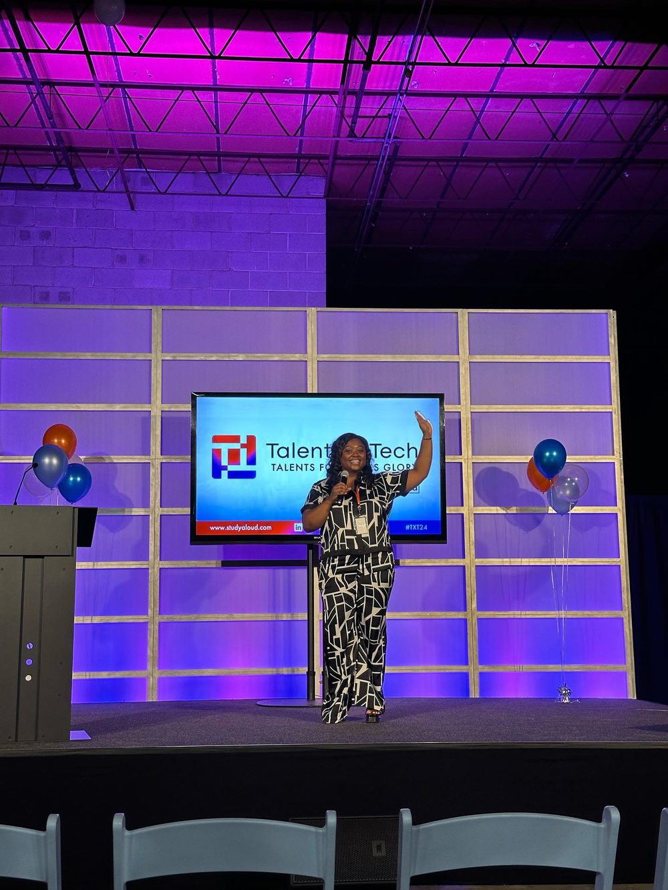
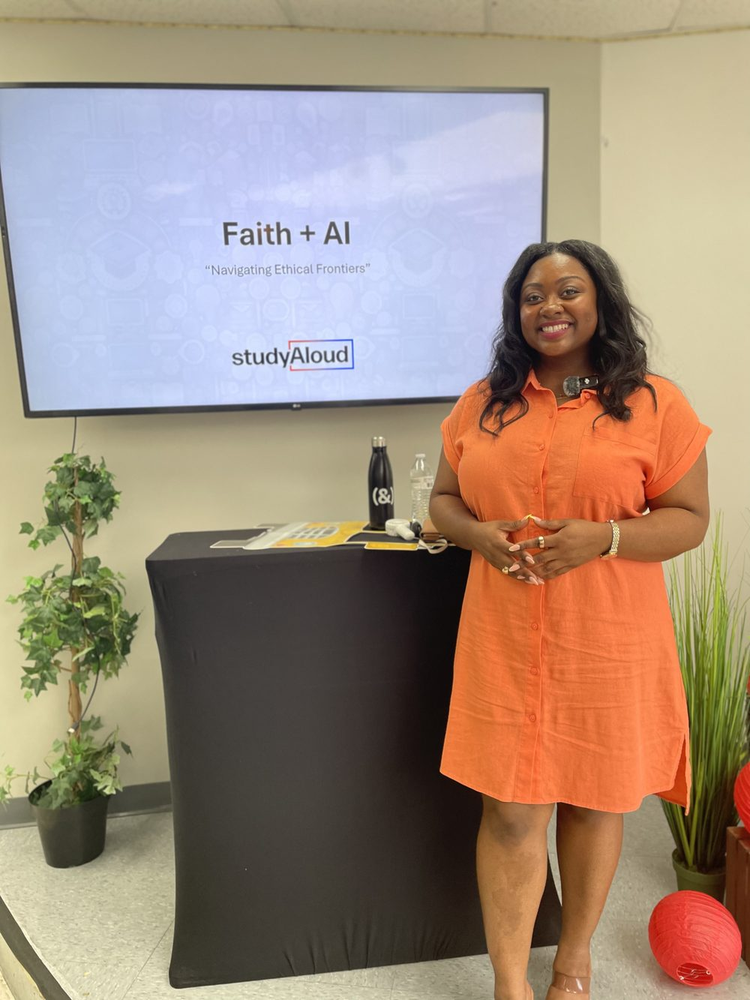
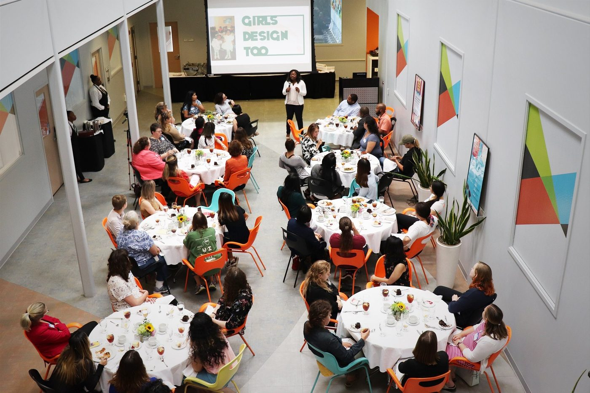

Speaker media kit · 2026
Experience design leader · Tech Founder · Minister · Speaker & educator
Speaker bio
Hunter Guy is a strategic experience design leader, founder, minister, and educator at the intersection of technology, leadership, and human impact. Over a decade in product and experience design she has driven more than $1M in incremental revenue, led design to a company-record NPS of 70%, and shipped award-winning platforms in fintech, edtech, and ecommerce. She serves as Principal UX Designer at Christianbook.com and is Co-Founder and CEO of Study Aloud — the company behind PathWEH, the world's first adaptive Bible study platform.
She is also a licensed minister with more than twelve years of ministry experience across two churches, now serving at Progressive Baptist Church in Chicago — teaching biblical literacy, developing discipleship curriculum, and equipping leaders. A sought-after voice on faith, AI, design, and innovation, she has spoken at places such as the Legacy Conference, Wheaton College's Billy Graham Center, and Brown University — featured in Christianity Today for her voice on AI and ethics. Her conviction: technology should help people become who God created them to be — digital formation, not just digital engagement.
Signature topics
How leaders build an AI strategy that starts with the humans it serves — what to adopt, what to resist, and how to make the call.
A framework for making ethical decisions under pressure — where values, velocity, and business reality collide.
Vision before backlog: deciding what deserves to be built and aligning organizations around it.
How structure, culture, and process have to move together for change to land.
Selected engagements & press
| Year | Engagement |
|---|---|
| 2024–26 | Wheaton College — Amplify Conference · Three consecutive years, incl. "Digital Shepherds: Discipling with AI Leverage" |
| 2026 | Brown University · Guest lecturer, "Responsibly Building with LLMs/AI" |
| 2025 | Christianity Today · Featured voice, "Meet the Christian Engineers Helping to Shape AI" |
| 2024 | AI Summit · "Human-Centered AI for Enterprises," Beyond the Hype series |
| 2024 | Talents × Tech Conference · Mainstage speaker, #TXT24 |
| Ongoing | Faith + AI: Navigating Ethical Frontiers · Founder & lead facilitator, ethics cohorts |



Keynotes, executive workshops, panels, guest lectures, cohort facilitation, and podcast or media appearances — tailored to your audience and the decisions in front of them.